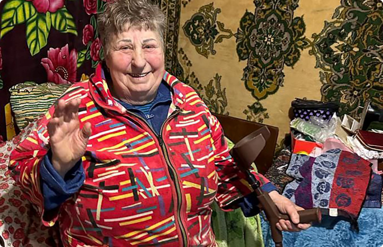

+38 (066) 100 60 76
+38 (066) 100 60 7603.07.2023
До редакції громадсько-інформаційної газети «Нове життя» надійшов лист від військовослужбовців.

До редакції громадсько-інформаційної газети «Нове життя» надійшов лист від військовослужбовців. Вони розповіли таку історію:
«Дороги війни привели нас до селища Близнюки Лозівського району. А там таких, як ми, воїнів укупі з переселенцями – тисячі. Знайти житло й розквартируватися було дуже й дуже складно. Однак, нам пощастило. На стихійному місцевому базарчику жіночка-інвалід, деякий час вагалася, а потім усе-таки запросила до себе. Спочатку жили в Тамари Антонівни (так її звуть) утрьох, потім четверо, потім ще і ще. Через деякий час стосунки між нами й господинею стали майже родинними. У вільний від служби час ми допомагали по господарству, а Антонівна опікувалася нами. Готувала, консервувала тощо. Усім було зручно й затишно. Але фронт пішов вперед, ми погнали орків з Харківської області й залишили Близнюки. А наша Антонівна, яка теж звикла до нас, засумувала та захворіла. Їй необхідний був апарат для дихання та засоби гігієни. Ми розуміємо, наскільки складно на пенсію та невеличку зарплатню дочки все це придбати. Але ми добро не забуваємо, тому все, що було необхідно, купили для доброї жінки і відправили в Близнюки. Є таке народне прислів’я: роби добро та кидай його у воду. Головне, щоб ті, хто його робить, забували про це, а ті, кому його роблять – довго пам'ятали. І тоді все буде добре і в наших душах, і в нашій державі. Слава Україні!»
Тамара Антонівна Рюма протягом 17 років працювала сестрою-хазяйкою у Близнюківській лікарні. Жінка виростила двох доньок, має чотирьох чарівних онуків. Усі вони обожнюють бабусю, бо для кожного вона знайде добре слово. У Антонівни проблеми з суглобами, тому пересувається вона в інвалідному візку. Але це не завадило чуйній жінці допомогти тим, кому підтримка й домашнє тепло конче необхідні.
Наразі Тамара Антонівна вже отримала подарунки від воїнів. Радіє й говорить:
– Я душею прикипіла до цих хлопців, бо вони для мене були як сини. За час їхнього тут проживання стали рідними. Я й зараз молюся за кожного з них і дякую долі, що дала змогу познайомитися з такими чудовими людьми! Мрію про те, щоб вони здобули перемогу й знову завітали до мене!..
Читайте також:

27.07.2023
Комітет з питань оздоровлення та реабілітації - працює!
Комітет з питань оздоровлення та реабілітації - працює! Особливо приємно вітати в цей день наших друзів...
Читати
23.07.2023
Найкращі сіточки для найкращіх!
Дякуємо за постійну допомогу маскувальними сітками Борису Редіну для Окремої механізованої бригади...
Читати
21.07.2023
Дякуємо за проявлену волонтерську ініціативу
Дякуємо за проявлену волонтерську ініціативу, патриотизм, та вагомий внесок у здобуття Перемоги - волонтерській групі Максима Титаренка....
Читати